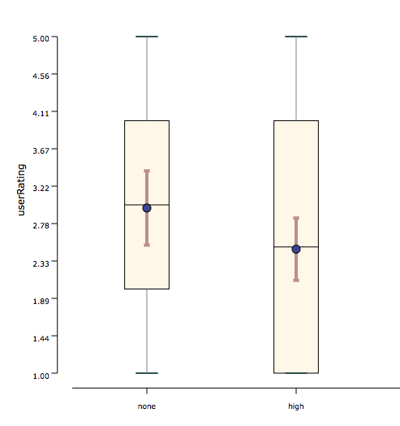
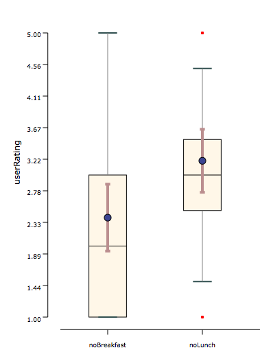

Mann–Whitney U test (also called the Wilcoxon rank-sum test) is used when 2 conditions are compared and they are unpaired (i.e., between-groups factor). It is an alternative test for unpaired t-test. It is used when the distributions are not normal. It still requires the homogeneity of variances to hold (i.e., the distributions should have equal variance).
Conditions:
- Within-subjects experimental design
- The number of Independent Variable is one
- The number of levels in Independent Variable are two
- Your independent variable should consist of two categorical, independent groups
- The dependent variable should be measured at ordinal or continous scale
Examples:
Example 1: In a weight loss user study, excercise of participants is considered under two different conditions (none and high), which were compared in a between-subjects experimental design. As shown in the graph below, the measured user rating was not normally distributed in each condition, but their variance were about the same.

Example 2: In a weight loss user study, wight loss of participants is considered under two different conditions (no breakfast and no lunch), which were compared in a between-subjects experimental design. As shown in the graph below, the measured user rating was not normally distributed in each condition, but their variance were about the same.
